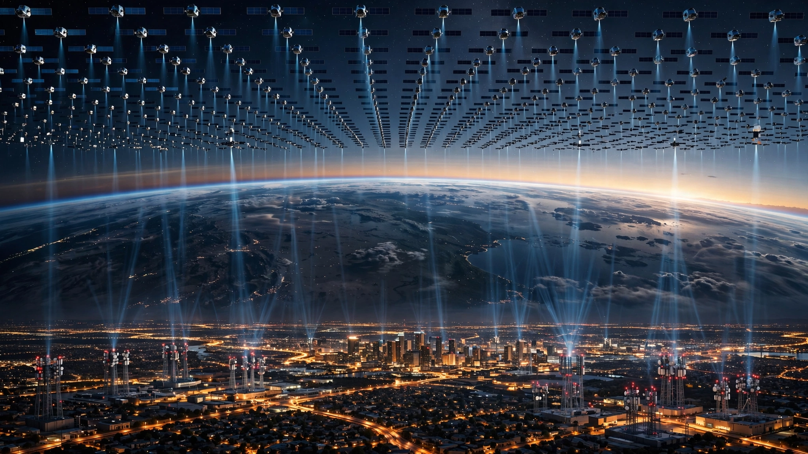

🏙️ Infrastructure
SpaceX Bought 65 MHz of Spectrum to Fight Carriers With 1,000. The Capacity Math Says the Satellites Change Everything.
SpaceX paid $19.6 billion for 6.5% of the Big Three's combined wireless spectrum. Wall Street wiped $46 billion from carrier market caps anyway. The raw MHz gap tells a misleading story when 9,600 satellites are already handling the coverage problem.

Sixty-five megahertz. That is the total spectrum SpaceX now controls after spending $19.6 billion on two EchoStar deals approved by the FCC on May 12, a number so small relative to what the incumbents hold that most telecom analysts initially dismissed it as irrelevant. Verizon, AT&T, and T-Mobile hold a combined roughly 1,000 megahertz of licensed spectrum across low, mid, and millimeter-wave bands, meaning SpaceX bought 6.5% of the incumbents' combined airwaves. And on Tuesday, SpaceX President Gwynne Shotwell told investors the company "definitely" intends to build terrestrial infrastructure and expects to win "quite a few" customers from those incumbents.
Wall Street responded with precision violence. Verizon, AT&T, and T-Mobile shares dropped 1 to 2.4 percent in premarket trading Wednesday, and since the Charter-SpaceX phone discussions leaked in late June, the Big Three have shed a combined $46 billion in market capitalization, according to Barron's, a reaction that implies investors believe a company with 6.5 percent of the spectrum can inflict damage far out of proportion to its raw bandwidth. Oppenheimer analyst Tim Horan crystallized the bull case in a client note: "SpaceX will disrupt the $1.6 trillion communications industry."
So who is right? Analysts who call 65 megahertz against 1,000 a suicide mission, or investors pricing in annihilation? Answering that requires doing math that neither camp has shown their work on: calculating what 65 megahertz of terrestrial spectrum actually delivers per tower, modeling what happens when you pair it with a 9,600-satellite constellation that already blankets the planet, and then comparing the resulting hybrid architecture to what a traditional carrier built over thirty years of incremental deployment.
The Spectrum Gap Is Real
Those 65 megahertz break down into three chunks: 15 MHz of unpaired AWS-3, 40 MHz of AWS-4, and 10 MHz of H-Block, all mid-band frequencies well suited for 5G NR. FCC language called it "exclusive-use, contiguous spectrum nationwide." It is the first time the agency has handed a satellite operator that kind of terrestrial license.
Compare that to incumbent holdings: T-Mobile controls approximately 300 megahertz across 600 MHz, 700 MHz, AWS, PCS, and C-band licenses. AT&T has roughly 270 megahertz, now boosted by 50 MHz from the same EchoStar fire sale. Verizon sits at about 270 megahertz including substantial mmWave holdings. Combined, that is approximately 840 megahertz of usable mid-and-low-band spectrum plus another 160 megahertz of millimeter wave, roughly a thousand megahertz.
Information theory does not negotiate. Shannon's channel capacity theorem says throughput scales roughly linearly with bandwidth, all else equal, which means a SpaceX cell tower running 65 megahertz at typical 5G NR spectral efficiency of 6 bits per hertz per sector would deliver about 390 megabits per second per sector, or 1.17 gigabits across three sectors, compared to the 5.4 gigabits a T-Mobile tower achieves with its 300 megahertz of mid-band spectrum at the same efficiency. Translated to users: SpaceX's tower serves 23 concurrent users at 50 Mbps each, while T-Mobile's serves 108.
"It makes no sense for SpaceX to try to replicate what terrestrial players have built over 30 years with 1,000 MHz between them, with 65 MHz," said David Barden of New Street Research. On a tower-for-tower basis, he is mathematically correct. One SpaceX tower does approximately one-fifth the work of one T-Mobile tower. Tower for tower, he wins the argument, and that is precisely the wrong frame for what SpaceX is actually proposing.
The Coverage Inversion
But here is where the incumbent math breaks. Traditional wireless business models require solving two problems simultaneously: coverage, meaning reaching customers everywhere, and capacity, meaning serving them enough bandwidth in dense areas. Every carrier in the United States has built approximately 400,000 cell sites nationally. Most exist not because downtown Manhattan needs more towers but because someone in rural Wyoming needs one bar of signal.
Coverage is the expensive problem, and it is the one SpaceX has already solved from orbit. Roughly 80 percent of U.S. mobile traffic concentrates in about 20 percent of the country's geography, the metros and suburbs where people cluster. That remaining 80 percent of land area generates thin, unprofitable traffic that carriers maintain because federal license obligations require it and because "nationwide coverage" is the marketing baseline.
SpaceX has already solved coverage, permanently and from orbit. Its Starlink constellation of 9,600-plus satellites in low Earth orbit blankets every square meter of U.S. territory with direct-to-cell capability. FCC waivers allow its spectrum for "terrestrial, space-based, and hybrid network architectures," a regulatory trifecta no incumbent has ever held. T-Mobile's existing partnership with SpaceX already demonstrated the concept: Starlink satellites provide connectivity to standard smartphones in areas without towers. Now SpaceX owns the spectrum to do it under its own brand.
This inverts the network economics completely. A traditional carrier building from scratch would need to deploy 400,000 sites to claim nationwide coverage, a staggering capital requirement that has kept every would-be fourth carrier from gaining traction since Sprint's collapse. SpaceX needs towers only where satellite capacity runs short, in dense urban cores where thousands of concurrent users overwhelm any orbital network, and that is perhaps 60,000 to 80,000 sites instead of 400,000. At roughly $250,000 per site, the difference is $20 billion versus $100 billion, and SpaceX's coverage layer is a sunk cost already circling above.
The Capacity Calculation Nobody Ran
Take Los Angeles: four million residents across 400 square miles, a metro dense enough to stress any wireless network and sprawling enough to make coverage expensive. T-Mobile operates approximately 3,000 cell sites in the metro, and at 5.4 gigabits per site, that LA network can serve roughly 324,000 concurrent users at 50 megabits each. At typical 5 percent simultaneous utilization, that covers the city's 200,000 peak concurrent users with room to spare.
SpaceX at the same 3,000 sites with 65 megahertz? Only 69,000 concurrent users. To match T-Mobile's LA capacity head to head, SpaceX would need roughly 14,000 sites in a single metro, and nobody is building 14,000 sites in Los Angeles for a brand-new carrier with zero subscribers.
But SpaceX does not need to match T-Mobile everywhere, and this is the insight that the raw spectrum comparison misses entirely. It needs to match T-Mobile where it matters, during peak hours in high-density areas, while the constellation handles everything else: every user checking email in a parking lot, streaming music on a highway, loading a map in a suburb, all routing through orbit instead of through a tower. If satellite offload handles 40 to 60 percent of a metro's traffic, SpaceX's terrestrial requirement drops from 14,000 sites to 5,600 to 8,400, a number that is still more than T-Mobile's 3,000 but shrinks the gap from absurd to merely expensive.
But can Starlink's constellation actually absorb that suburban and rural traffic? Each V2 Mini satellite has roughly 40 to 80 gigabits of throughput, but direct-to-cell connections to standard smartphones, which have small antennas and low transmit power, operate at much lower data rates than dish-based Starlink, perhaps 5 to 20 megabits per user. With 9,600 satellites and roughly one-third over the continental U.S. at any moment, the constellation provides approximately 3,200 satellites for domestic service, and at even 10 gigabits of D2D capacity per satellite, that is 32 terabits for the entire country: enough for 640,000 concurrent D2D users at 50 megabits each. For comparison, T-Mobile alone serves roughly 7 million concurrent users during peak hours.
As currently configured, the constellation cannot replace terrestrial infrastructure in cities, full stop. Satellites are a coverage solution, not a capacity solution, and SpaceX needs towers.
What $19.6 Billion Bought
SpaceX paid $0.91 per megahertz per population for its spectrum, calculated as $19.6 billion divided by 65 megahertz divided by 330 million people. That is competitive with historical FCC auction prices. At the C-band auction in 2021, pricing cleared at $0.88 per MHz-pop. At the 600 MHz auction in 2017, it ran $0.86. AWS-3 in 2015 hit $2.09. SpaceX did not overpay.
But spectrum is only the entry ticket. Total network buildout for a competitive urban mobile service would require an additional $20 to 40 billion for terrestrial infrastructure, including towers, small cells, backhaul fiber, core network switching, billing systems, and customer service operations, none of which SpaceX currently has and all of which the incumbents have spent decades assembling. Shotwell was notably cagey about costs, saying SpaceX has "great and new ideas" on capital efficiency, which is executive-speak for not having figured out how to do this cheaply yet.
Economics hinge on subscriber acquisition, and the numbers pencil out only if SpaceX can build a customer base fast enough to justify the infrastructure spend. If SpaceX captures 15 million U.S. mobile subscribers by 2030, as Oppenheimer projects, at the industry-average ARPU of $55 per month, annual mobile revenue would hit $9.9 billion, yielding a 4 to 6 year payback period against the combined $40 to 60 billion spectrum-and-infrastructure investment before financing costs. Tight but not impossible, especially for a company that has already demonstrated willingness to burn capital for years before profitability: see every Falcon 9 that landed on a barge before anyone believed it would work.
The CapEx Asymmetry
What carriers should fear is not 65 megahertz. It is the marginal cost of adding mobile to SpaceX's existing infrastructure, because that cost is dramatically lower than what any traditional new entrant would face. Starlink's 9,600-satellite constellation represents $10 to 15 billion in sunk investment. The Falcon 9 fleet and launch operations represent another $2 to 3 billion. Starship, once operational, will reduce per-satellite launch costs by an order of magnitude. The spectrum cost $19.6 billion. All of this infrastructure serves multiple businesses simultaneously: residential broadband, maritime, aviation, government contracts, and now mobile.
Verizon, by contrast, spent $17.1 billion on capital expenditures in 2025 alone, virtually all of it dedicated to one business: wireless and fiber connectivity. AT&T spent $22 billion. T-Mobile spent $9.6 billion. Combined, the Big Three pour roughly $49 billion per year into infrastructure that serves a single market. SpaceX's infrastructure amortizes across half a dozen revenue streams. That is not a spectrum advantage but an accounting advantage, and accounting advantages compound over every fiscal quarter.
Limitations
This analysis has blind spots worth naming. Our spectral efficiency assumptions (6 bps/Hz) represent ideal mid-band 5G NR with MIMO; real-world performance varies by terrain, interference, and density. SpaceX's AWS-4 and H-Block spectrum may face different propagation than T-Mobile's diversified portfolio spanning 600 MHz to mmWave, particularly indoors where low-band penetrates walls that mid-band cannot. The satellite offload model assumes seamless orbit-to-ground handoffs, a capability demonstrated in limited D2D trials but never at scale with millions of concurrent users performing latency-sensitive tasks. We do not account for future spectrum acquisitions that could change the ratio. And carrier subscriber counts include multi-line accounts and IoT connections, inflating the competitive denominator.
The Strongest Counterargument
Craig Moffett of MoffettNathanson, one of the most respected telecom analysts on Wall Street, put it plainly: "Unless Starlink can secure an MVNO agreement from one of the carriers, which would provide a baseline of coverage, it's extraordinarily challenging to imagine a direct-to-consumer service from Starlink that could be competitive with carrier services in the next five years." Moffett's logic is structural. The carriers' combined 400,000 cell sites, three decades of network optimization, and entrenched billing and distribution relationships constitute a moat measured not in megahertz but in deployed capital and customer inertia. The iPhone changed mobile computing overnight, but the network that iPhone rode on took AT&T, Verizon, and T-Mobile a combined $800 billion and thirty years to build. SpaceX's advantage in launch economics does not translate into an advantage in municipal permitting, tower construction, backhaul negotiation, or the grinding operational reality of keeping 400,000 radios alive in every weather condition from Phoenix summers to Minnesota winters. Satellites are elegant. Wireless networks are brutally operational.
What You Can Do
If you are a carrier investor, the $46 billion market cap loss prices in a threat 3 to 5 years from material revenue. Watch for SpaceX filing tower construction permits in top-50 metros, the capital commitment that turns rhetoric into competition.
If you are a carrier executive, the defensive play is not more spectrum but making your network too useful to leave through bundling 5G home internet, streaming, and financial services, because multi-product customers churn at one-third the rate of single-line subscribers and SpaceX will target the easy-to-poach single-line user first.
If you are a consumer, do nothing yet. SpaceX's mobile service does not exist, and when it launches (likely 2028 or 2029), evaluate it the way you would any carrier: coverage maps, speed tests during peak hours, and fine print on data caps.
The Bottom Line
The 65-versus-1,000 megahertz comparison is the wrong frame. SpaceX is not trying to build a fourth terrestrial wireless network. It is building the first hybrid orbital-terrestrial network, one where coverage comes from space and capacity comes from the ground. At 65 megahertz, SpaceX's towers deliver one-fifth the throughput of T-Mobile's per site. But SpaceX needs one-fifth as many sites because 9,600 satellites already solve the coverage problem that consumes the majority of carrier infrastructure spending. The math does not say SpaceX wins. It says SpaceX can compete in a way that no previous new entrant could because no previous entrant had a constellation in orbit before it bought its first megahertz of spectrum. The $19.6 billion was the entry ticket. The $10 to 15 billion constellation was the cheat code. Whether SpaceX can execute the terrestrial build, attract subscribers, and sustain years of capital-intensive competition against entrenched incumbents remains the $46 billion question. But the math, at least, says the fight is worth having.